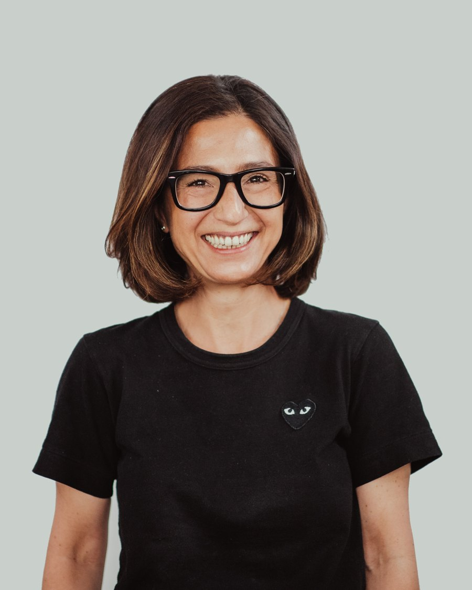
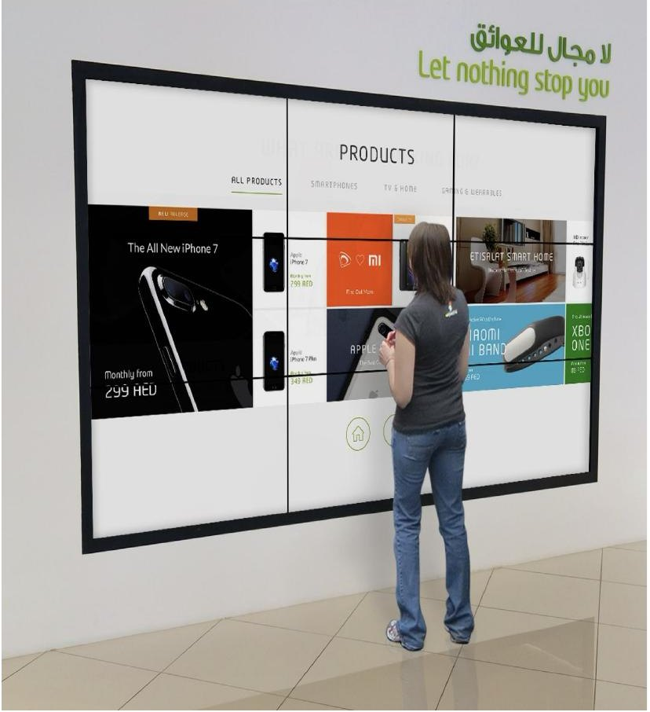
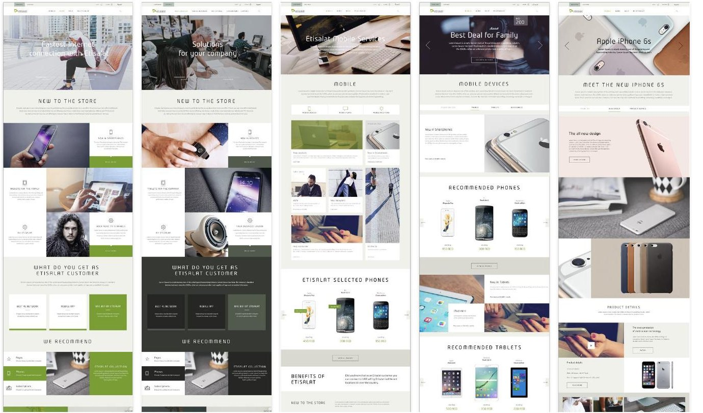
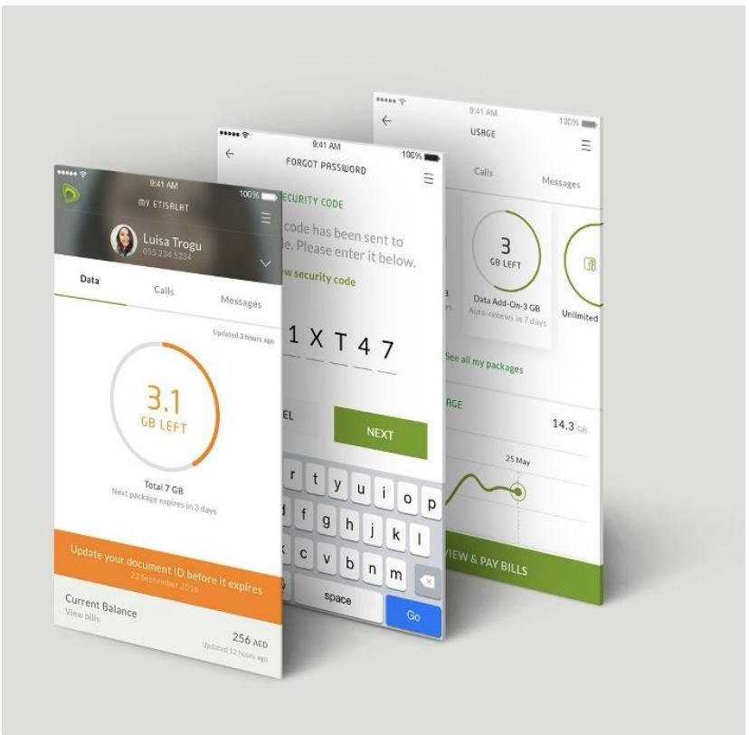
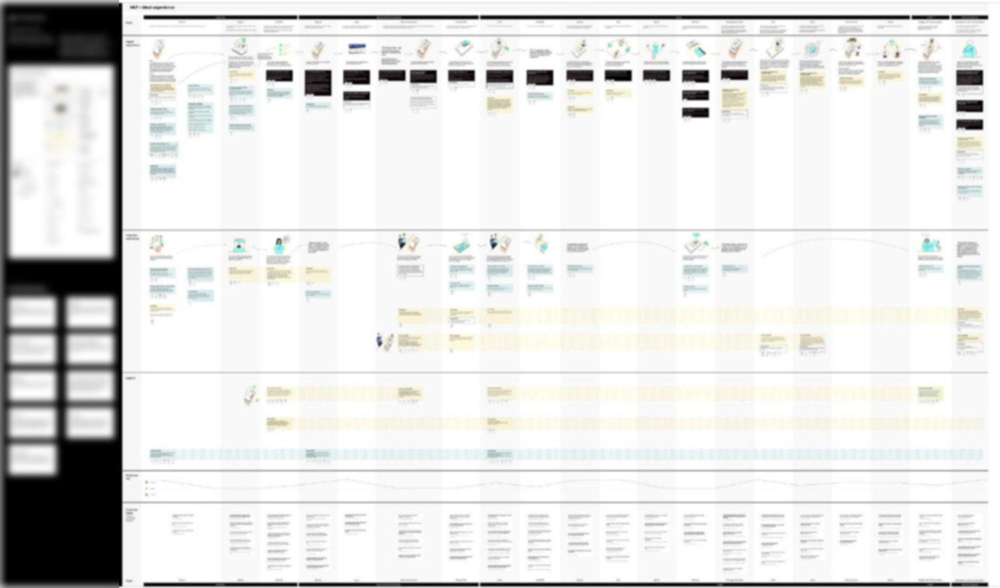
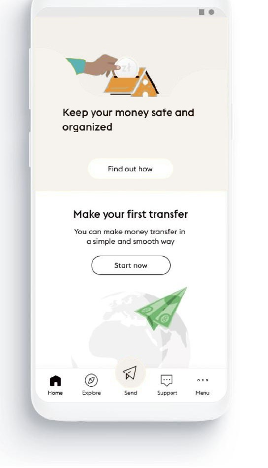
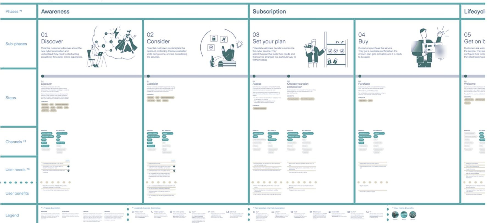
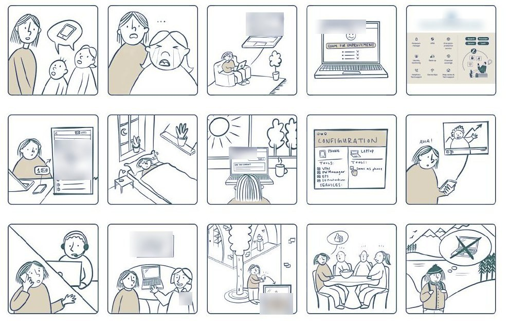

For 20 years I have worked where people, technology and business meet: digital product management at Vodafone, customer value management and loyalty consulting at Accenture, and ten years leading strategic design at Fjord.
I take services from the first strategic question to launch, and I build the teams that get them there.

telco, banking, insurance, life sciences and energy
I worked across Switzerland, Italy, the UAE, Greece, Romania and Turkey
products and services I worked on have gone live
I reframe the brief when it is too small: from "make our channels look better" to changing how a company designs for its customers, from one flat portal to propositions for four customer mindsets. Long-range visions stay grounded: I start from market signals and work back from the future state to what must start now.
Research, mindsets and archetypes, customer journeys, service blueprints and concepts teams can build. I combine qualitative insight with quantitative data, and I test concepts with the people they are for, including customers who are not digitally confident.
I have led teams from 4 to 15 people, and programmes with parallel streams under senior leads. I delegate real authority, hold teams to the principles we agree at the start, and own the client relationship, including the difficult conversations.
Building a design capability inside a client, leading a multi-stream programme, and taking a new service from research to launch.
In 2023 I made a deliberate investment in a long career in Switzerland: the language first, then my own practice, teaching, and hands-on work with AI.
Founded in 2025: my independent service and innovation design practice, collaborating with other independent studios and start-ups.
Lecturer in the xMBA programme at Innovationsverband Schweizer Arbeitsmarkt. I facilitated sessions for 30 senior participants, with team-level analysis and tailored coaching.
I build and run AI services using Python, Mistral and Notion, to learn where AI speeds up research and synthesis, and where human judgement stays essential.
I work with local companies where German is the only working language, and I keep up private lessons. Current level: B2.
Engineering roots, an MBA, and a career spent making digital services useful for the people.
Independent service and innovation design practice.
Design Thinking theory and practice in the xMBA programme.
A deliberate 18-month investment in working in German in Switzerland.
Strategic and product design for financial services, insurance, life sciences and energy clients in Switzerland and Italy. Includes a cybersecurity service for a Swiss insurer, a digital money service for an international financial services company, and redefining talent and skills for a life-sciences client's move to agile.
Set up and co-led a 15-designer studio inside the UAE's incumbent telco; launched app, portal, e-commerce, loyalty and a youth service in 18 months.
Redesigned Etisalat's customer value management: new business rules, call-centre and sales skills and KPIs. +2.6% year-over-year mobile revenue.
Retention and customer value management for Vodafone in Romania, Greece and Turkey.
Customer and dealer experiences for the launch of one of Italy's first mobile virtual network operators.
Design, launch and management of Vodafone's digital channels.
New products and services designed and launched in telco, insurance, energy, banking and pharma. Large digital and culture transformations. Customer and employee experience programmes.
Italian citizen · Swiss C permit
The studio grew out of trust I had built with Etisalat. I used it to show the client what a design-led company could look like, and then to build one with them, co-leading the studio with my Etisalat counterpart.
2013 – 2017
Design Lead · studio co-lead · client relationship owner
CMO and CIO
15 designers, mostly from Fjord, embedded in the client's teams
App, portal, e-commerce, loyalty and a youth service launched in 18 months
At Accenture I led customer value management and loyalty programmes for Etisalat that delivered results, and became a trusted voice for the client.
With Fjord colleagues, I showed the client that its business was held back by being process-driven rather than human-led.
We proposed redesigning the app and web experience, on one condition: working on the whole customer experience, not only the aesthetics.
Before launch, the CMO and CIO valued the new collaboration between marketing, design and IT. After the first releases: higher app ratings and fewer complaints.
Together we set up a design team inside Etisalat, staffed mostly by Fjord designers to bring in the culture, not just the skills.
Etisalat asked for a design partner to make its digital channels look better. The real limit was elsewhere: the business was process-driven, not human-led, so experiences were shaped around internal processes rather than around the people using them.
From "beautify our channels" to a design capability embedded in the company. I didn't win that argument in a single pitch: I earned it pilot by pilot, with functional results rather than visual ones, until the client funded the deeper transformation.
Turned a trusted delivery relationship into a strategic mandate, and aligned marketing and IT behind one design-led direction.
Led the scoping team that defined the key objectives with the client and crafted the strategic roadmap for the transformation.
Recruited and onboarded designers who became internal catalysts for innovation, integrated into the client's own teams.
Ran several projects in parallel by giving senior leads real ownership of day-to-day delivery, with a shared coordination structure.
Held the team to the visual guidelines and interaction principles we agreed at the start, so the brand stayed consistent across every channel.



higher app ratings and fewer customer complaints, the proof that led to the studio
from contract signature to launch of the new app, web portal, e-commerce platform and loyalty programme, plus new services for segments such as youth
our success with the consumer experience led Etisalat to extend the studio's scope to the business domain
Etisalat became the most recognisable brand in the Middle East, ahead of companies such as Emirates; the digital experience we built was part of that story
I can create the opportunity, not just deliver it: turn trust into a strategic mandate, build a design practice inside a large organisation, and lead it at scale.
At the start of the pandemic, an international financial services company with a large global customer base saw its physical touchpoints close overnight. It had to go digital fast, for customers who were not digitally savvy, and decide where to grow next.
2020 – 2022
Project Design Director, overall lead
Three parallel streams, each led by a senior lead reporting to me
New service launched in three European countries in 2022
Physical touchpoints drove almost all of the business, and COVID measures closed them. The core business was at risk, most customers were not comfortable with digital or financial services, and the company also wanted to find its next growth opportunities.
Work on two horizons at once. One team fixed the immediate problem with a new digital banking service; another defined a Vision and Mission 2030, the business opportunities for the next 5 to 10 years, and the roadmap to get there.
Led the vision stream, the cross-channel journey stream and the app design stream as one programme, through their senior leads.
An app that guides customers toward digital money with simple interactions and accessibility for people new to digital and financial services.
When two streams sent overlapping messages to the client, I backed the one with the stronger evidence and had it coach the other, so we spoke with one voice.
Built the 2030 vision from market signals and worked backward from the future state to show why action had to start now.


the client launched its new digital banking service in three European countries in 2022
a vision, new business opportunity spaces and a roadmap to position the company in the digital international landscape
the client took the work in-house after the engagement, a sign of confidence in the direction we set
I can lead senior people across parallel streams, balance an urgent fix with a long-range vision, and design for customers that digital services usually leave behind.
The insurer had a clear business case for a new cybersecurity service. It needed to understand its customers' very different attitudes to cyber risk, and to design a service people would actually want and pay for.
2022 – 2024
Project lead · client relationship owner · research lead
4 designers, working with the client team
MVP launched in 2024
The starting idea was a single web portal, the same for everyone. But people relate to cyber risk in very different ways, from "I have nothing worth attacking" to "my son installed a security programme, I don't know how it works". One flat offer would speak to nobody.
From one portal to propositions tailored to four customer mindsets: a dynamic, behavioural lens rather than static segments. It changed how the value of the service could be communicated, and I made that case during scoping and planning.
Designed and ran qualitative research to complement the client's quantitative studies, and defined four archetypes to build empathy.
With the client team: the service vision, 24 service concepts with their customer journeys, and the service blueprint that enables them.
Structured peer reviews across the team, testing every concept against research insights, business goals and the principles set at the start.
When the client asked for a full app build, I negotiated storyboards showing how the app would work, keeping the project in scope and budget.


of prospects interviewed recognised the fit between the insurer's brand and the proposition, and showed propensity to pay
service concepts designed and tested, with customer journeys and the blueprint to deliver them
MVP launched: a new revenue source, and a relationship with customers rather than a one-off transaction
I can take a new service from research to launch, change the strategy when the evidence says so, and prove demand before the client builds.